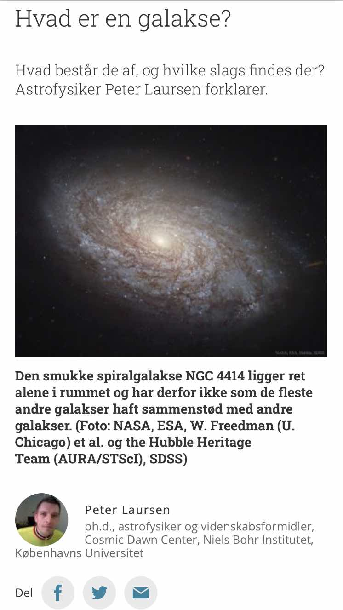
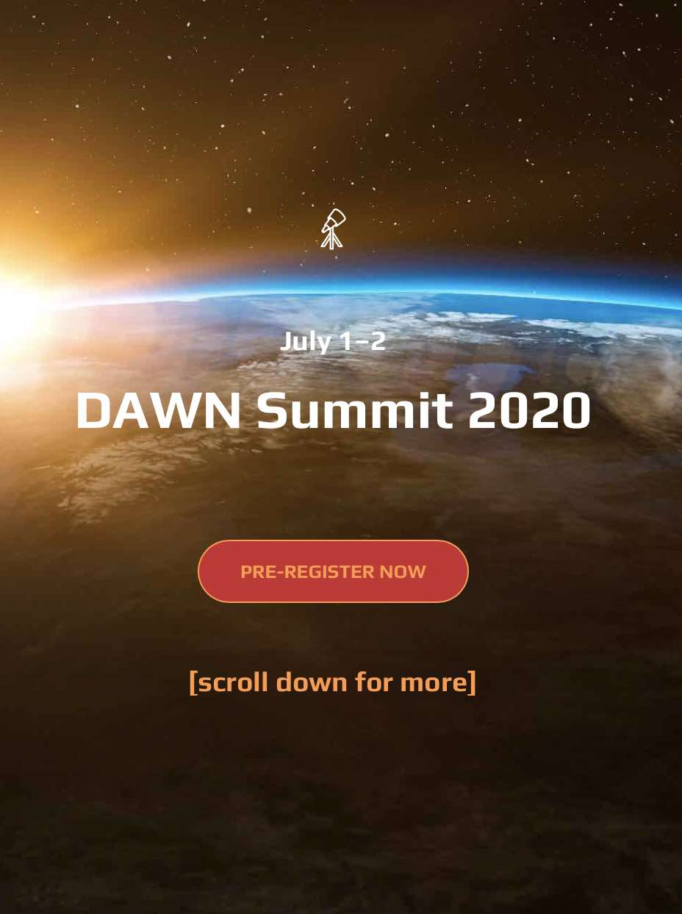
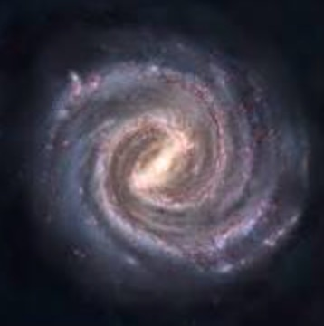
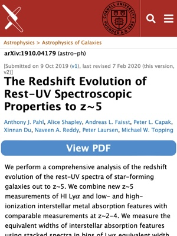

Home
News
Research
Outreach
Teaching / supervision
CV
Contact me
Personal
News and recent activities
News
And by "News and recent activities" I mean news and recent activities involving
me
:)
April 2023
16 Apr 2025
14 Apr 2025
14 Apr 2025
7 Apr 2025
3 Apr 2025
2 Apr 2025
March 2025
29 Mar 2025
22 Mar 2025
19 Mar 2025
19 Mar 2025
18 Mar 2025
17 Mar 2025
14 Mar 2023
February 2025
28 Feb 2025
26 Feb 2025
20 Feb 2025
20 Feb 2025
20 Feb 2025
19 Feb 2025
10 Feb 2025
8 Feb 2025
14 Feb 2025
3 Feb 2025
3 Feb 2025
January 2025
31 Jan 2025
30 Jan 2025
27 Jan 2025
25 Jan 2025
21 Jan 2025
17 Jan 2025
8 Jan 2025
7 Feb 2025
7 Jan 2025
6 Jan 2025
December 2024
13 Dec 2024
12 Dec 2024
6 Dec 2024
4 Dec 2024
4 Dec 2024
1 Dec 2024
November 2024
29 Nov 2024
20 Nov 2024
9 Nov 2024
8 Nov 2024
7 Nov 2024
6 Nov 2024
1 Nov 2024
October 2024
25 Oct 2024
24 Oct 2024
21 Oct 2024
9 Oct 2024
7 Oct 2024
1 Oct 2024
September 2024
23 Sep 2024
17 Sep 2024
1 Sep 2024
August 2024
29 Aug 2022
13 Aug 2022
12 Aug 2024
9 Aug 2024
July 2024
1 Jul 2024
June 2024
17 Jun 2024
15 Jun 2022
3 Jun 2022
3 Jun 2024
May 2024
31 May 2024
30 May 2024
29 May 2024
27 May 2024
24 May 2024
24 May 2024
23 May 2024
23 May 2024
8 May 2024
April 2024
25 Apr 2023
22–26 Apr 2023
22 Apr 2023
17 Apr 2023
15–17 Apr 2023
5 Apr 2023
March 2024
22 Mar 2024
6 Mar 2024
February 2024
20 Feb 2024
January 2024
19 Jan 2024
December 2023
28 Dec 2023
23 Dec 2023
1 Dec 2023
November 2023
17 Nov 2023
16 Nov 2023
October 2023
25 Oct 2023
13 Oct 2023
5 Oct 2023
2 Oct 2023
September 2023
21 Sep 2023
11 Sep 2023
5 Sep 2023
August 2023
29 Aug 2023
25 Aug 2023
18 Aug 2023
11 Aug 2023
11 Aug 2023
10 Aug 2023
9 Aug 2023
8 Aug 2023
July 2023
2 Jul 2023
2 Jul 2023
June 2023
26–28 Jun 2023
12 Jun 2023
8 Jun 2023
7 Jun 2023
3 Jun 2023
May 2023
31 May 2023
17 May 2023
10 May 2023
April 2023
24–28 Apr 2023
18 Apr 2023
March 2023
28 Mar 2023
22 Mar 2023
February 2023
23 Feb 2023
21 Feb 2023
16 Feb 2023
15 Feb 2023
1 Feb 2023
Januar 2023
28 Jan 2023
20 Jan 2023
17 Jan 2023
13 Jan 2023
3 Jan 2023
December 2022
21 Dec 2022
16 Dec 2022
12 Dec 2022
12 Dec 2022
8 Dec 2022
November 2022
27–30 Nov 2022
22 Nov 2022
18 Nov 2022
15 Nov 2022
9 Nov 2022
9 Nov 2022
October 2022
19 Oct 2022
13–16 Oct 2022
3 Oct 2022
September 2022
26–30 Sep 2022
12 Sep 2022
12 Sep 2022
12 Sep 2022
August 2022
31 Aug 2022
31 Aug 2022
31 Aug 2022
29 Aug 2022
July 2022
28 Jul 2022
21 Jul 2022
18 Jul 2022
13 Jul 2022
11 Jul 2022
11 Jul 2022
12 Jul 2022
12 Jul 2022
11 Jul 2022
8 Jul 2022
4 Jul 2022
June 2022
29 Jun 2022
27 Jun 2022
26 Jun 2022
20–21 Jun 2022
19 Jun 2022
7 Jun 2022
1 Jun 2022
May 2022
27 May 2022
23 May 2022
18 May 2022
14 May 2022
April 2022
29 Apr 2022
28 Apr 2022
27 apr 2022
22 apr 2022
20 apr 2022
9 apr 2022
7 apr 2022
March 2022
30 Mar 2022
9 Mar 2022
6 Mar 2022
1 Mar 2022
February 2022
17 Feb 2022
16 Feb 2022
11 Feb 2022
January 2022
10 Jan 2022
10 Jan 2022
1 Jan 2022
December 2021
27 Dec 2021
25 Dec 2021
25 Dec 2021
25 Dec 2021
24 Dec 2021
23 Dec 2021
22 Dec 2021
21 Dec 2021
20 Dec 2021
18 Dec 2021
17 Dec 2021
16 Dec 2021
8 Dec 2021
7 Dec 2021
5 Dec 2021
1 Dec 2021
November 2021
30 Nov 2021
21 Nov 2021
October 2021
18 Oct 2021
12 Oct 2021
September 2021
27-30 Sep 2021
23 Sep 2021
21 Sep 2021
20-22 Sep 2021
20 Sep 2021
17 Sep 2021
14 Sep 2021
14 Sep 2021
8 Sep 2021
August 2021
17 Aug 2021
9 Aug 2021
July 2021
12 Jul 2021
June 2021
28 Jun 2021
17 Jun 2021
May 2021
28 May 2021
11 May 2021
April 2021
29 Apr 2021
26–29 Apr 2021
6–11 Apr 2021
March 2021
29 Mar 2021
28 Mar 2021
February 2021
24–25 Feb 2021
21 Feb 2021
18 Feb 2021
January 2021
29 Jan 2021
12 Jan 2021
December 2020
30 Dec 2020
17 Dec 2020
1 Dec 2020
November 2020
24 Nov 2020

23 Nov 2020
17 Nov 2020
12 Nov 2020
October 2020
26 Oct 2020
23 Oct 2020
10 Oct 2020
6 Oct 2020
September 2020
23 Sep 2020
23 Sep 2020
21 Sep 2020
12 Sep 2020
7 Sep 2020
August 2020
31 Aug 2020
July 2020
11 Jul 2020

1–2 Jul 2020
June 2020
22 Jun 2020
15 Jun 2020
May 2020
25 May 2020
April 2020
24 Apr 2020
3 Apr 2020
March 2020
23 Mar 2020
12 Mar 2020
2–6 Mar 2020
February 2020
13-16 Feb 2020
January 2020
22 Jan 2020
December 2019
28 Dec 2019
5 Dec 2019
November 2019

12 Nov 2019
1 Nov 2019
1 Nov 2019
October 2019
25 Oct 2019
21 Oct 2019

11 Oct 2019
5 Oct 2019
4 Oct 2019
September 2019
23-24 Sep 2019
12 Sep 2019
August 2019
29 Aug 2019
20 Aug 2019
14 Aug 2019
12 Aug 2019
8 Aug 2019
July 2019
26 Jul 2019
28 Jul 2019
23 Jul 2019
20 Jul 2019
17 Jul 2019
17 Jul 2019
12 Jul 2019
11 Jul 2019
9 Jul 2019
June 2019
29 Jun 2019
28 Jun 2019
24 Jun 2019
13 Jun 2019
5 Jun 2019
2 Jun 2019
May 2019
29 May 2019
16 May 2019
April 2019
17 Apr 2019
14 Apr 2019
11 Apr 2019
10 Apr 2019
9 Apr 2019
4 Apr 2019
March 2019
29 Mar 2019
21 Mar 2019
14 Mar 2019
February 2019
17 Feb 2019
1 Feb 2019
January 2019
9 Jan 2019
9 Jan 2019
9 Jan 2019


{kind=link}
{kind=link}
{kind=link}
{kind=link}
{kind=link}